2022
Beyond the Yellow Brick Road, An Elton John Music & Fashion Experience
Roblox is an online game platform. I freelanced with Sawhorse Productions as the sole UX resource on an Elton John virtual concert and fashion experience in Roblox.
Project purpose
The Roblox experience required a design system that worked on a range of gaming devices and created a cohesive user experience while aligning with the Elton John brand.
Measurable Impact
- #1 official roblox concert, 88% approval rating, 2.3 million visits
Team members
- Ptrick Trinh, Project Lead
- Jessica Thomas, Motion Graphics & Creative Director
- Kimb Luisis, Creative Director
- Dan Young, Creative Director
- Talia Bowles, UX/UI Designer
- Mikaela Farrel, Illustrator
- Joseph Gutierrez, Developer
- Tyler Gnass, Developer
- Edmon Snyder, Developer
Gaming Design System Research
I started looking for design and component patterns in other Roblox experiences to see what might be needed for a gaming specific design system. These are screenshots from an Alo Roblox experience.

Text only, appears in the middle of the screen, no close button

Text icon, appears from the top of the screen, no close button
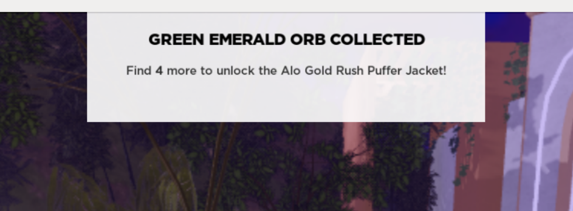
Text only, appears from the top of the screen, no close button
Elton John Style References
For Elton John specific visual references, I had their style guide and website.
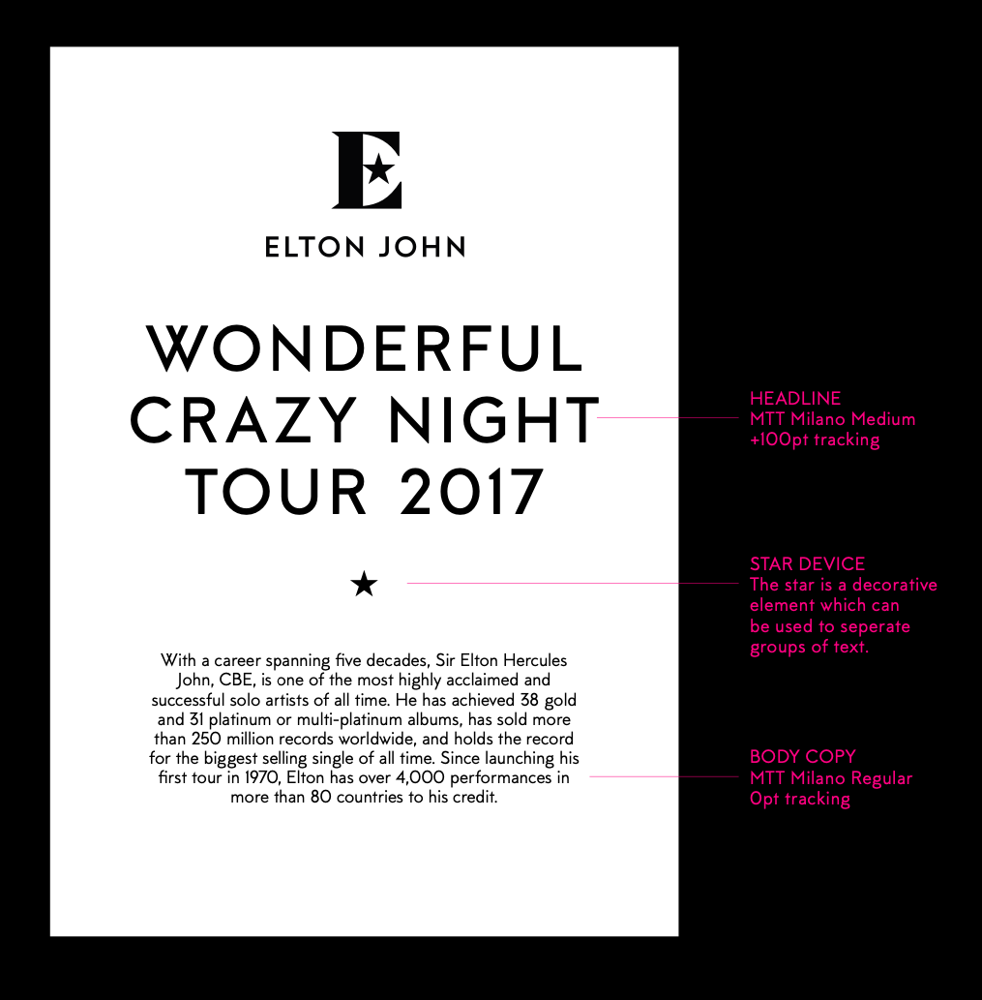
Elton John style guide
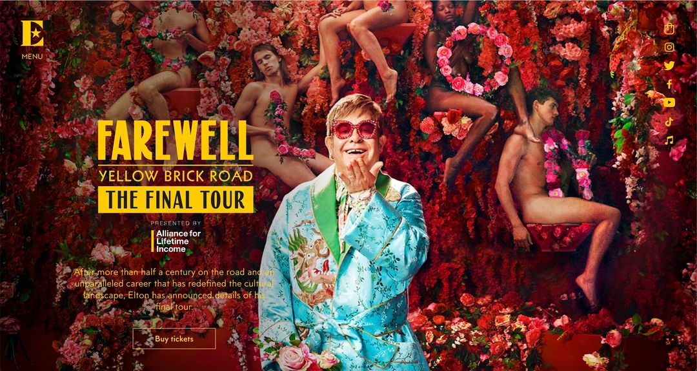
Elton John website hero image
Gaming Visul Design References
I also explored visual design used specifically in gaming experiences. These are the examples the creative director preferred.
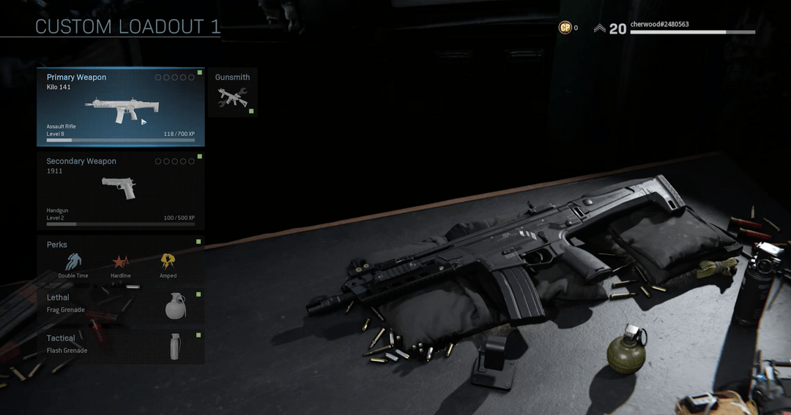
Side menu
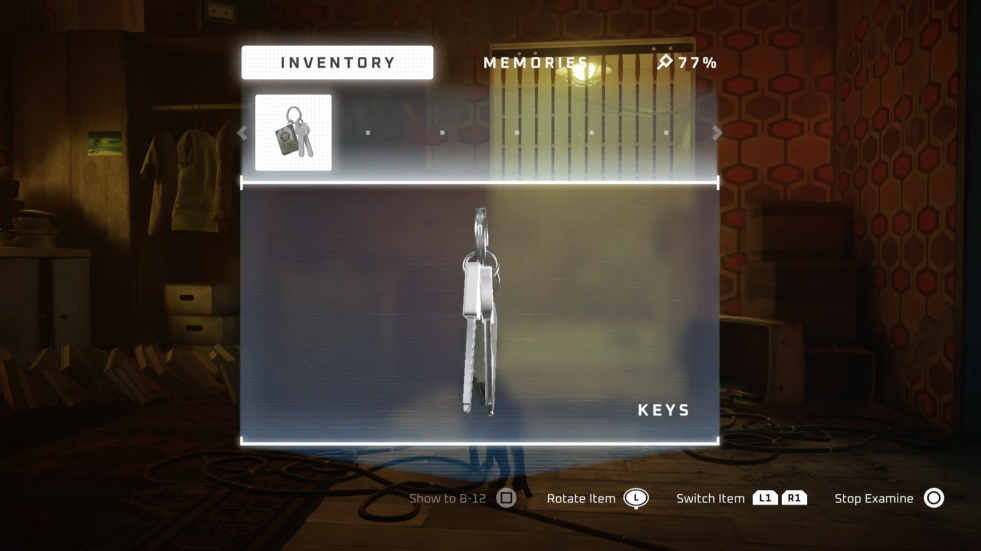
Modal
Iterative Design Process
I started in low fidelity to get a grasp of all the components needed. Then I explored the application of visual design on these components.
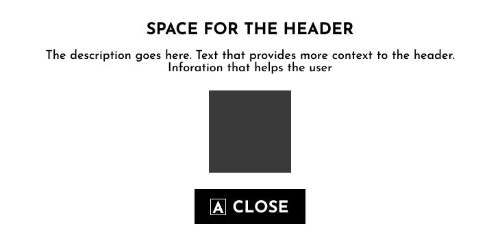
Low fidelity component

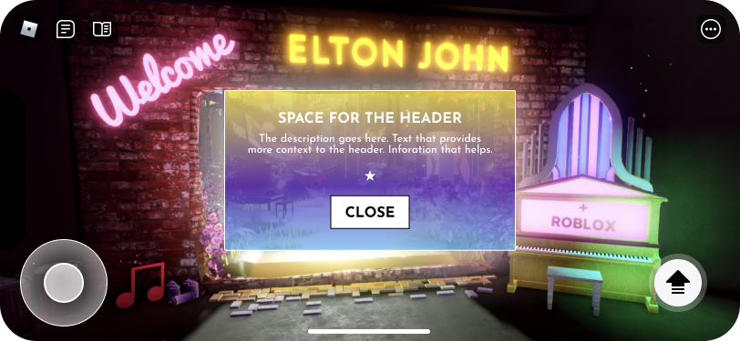
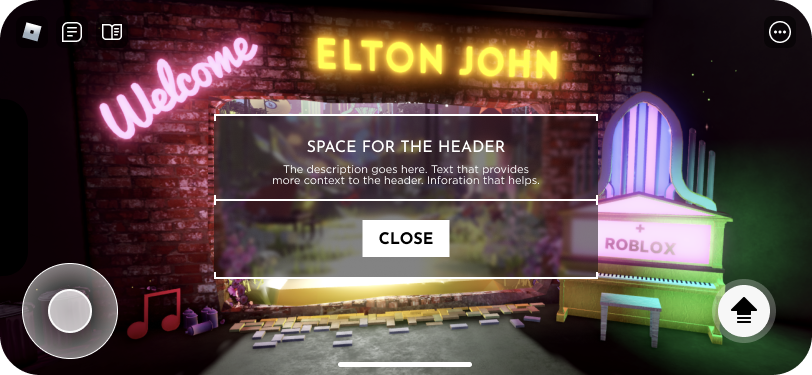
Final Design System
After the iterative process and client feedback, this became the final design system direction.
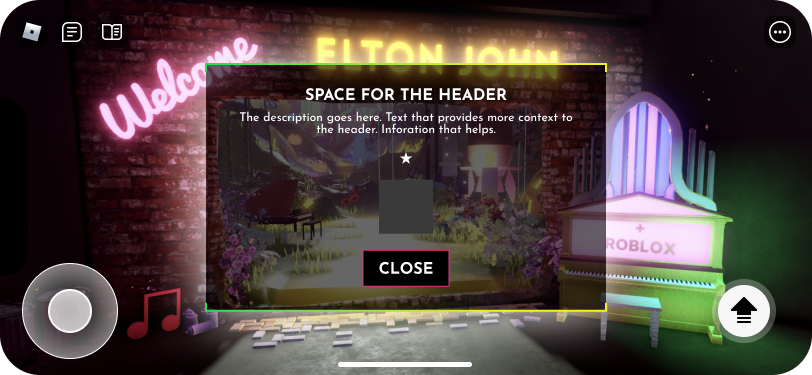
Center of screen, header, body text, image, button
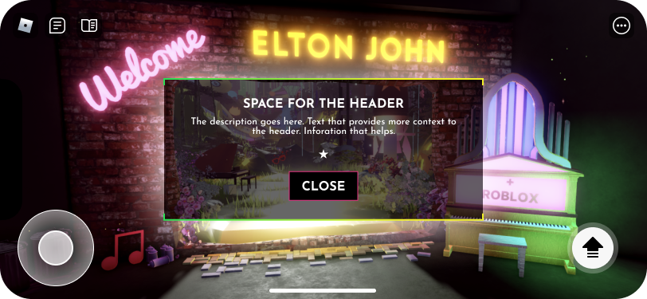
Center of screen, header, body text, no image, button
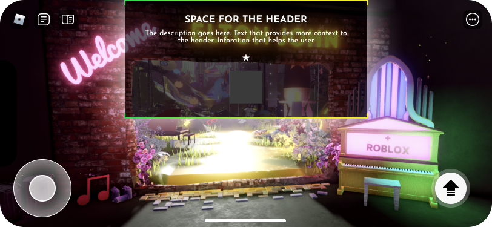
Top of screen, header, body text, image, no button
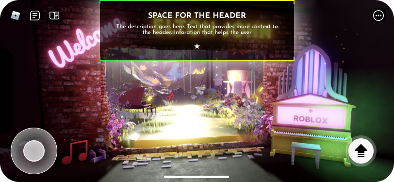
Top of screen, header, body text, no image, no button
Development
UI on Roblox is based on a UDim2 value, which is based on the size of the viewport. For example (1,1) is 100% on X/Y, which means that component will take up the whole viewport. There can be pixel measurements, but they don't scale well. This lack of exact pixel measurements cause inconsistencies in button size, padding and other details.
Below you can see more examples of final screens and the variations in scale that were due to lack of exact pixel measurements.
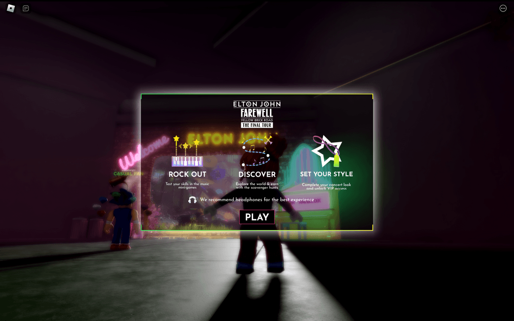
Opening modal
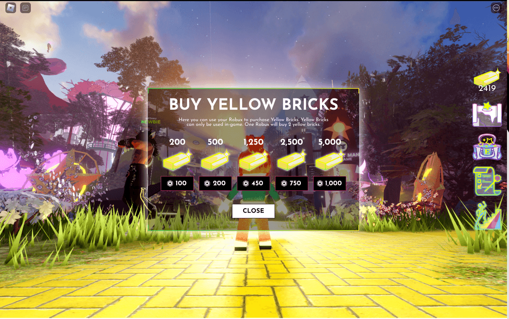
Yellow brick purchase modal
Quest tracker
Rocket club level tracker